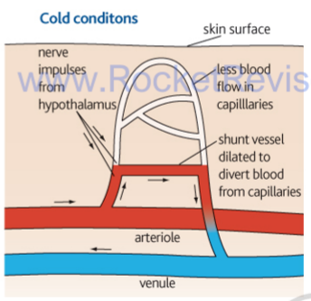

Control of the Internal Environment
Body cells work only if the conditions around them stay within narrow limits. This page explains homeostasis and feedback, then applies them to three examples: how the heart rate and cardiac output change, how breathing responds to carbon dioxide, and how body temperature is held near 37 °C.
Homeostasis and dynamic equilibrium
Homeostasis is the maintenance of a stable internal environment. Its key feature is that conditions are not fixed but kept within a range around a set point. The body's temperature, blood glucose, blood pH and blood gas levels all keep moving slightly, and the control systems correct them as they drift. This is called dynamic equilibrium, and it is why the word "balance" is misleading: the system is always correcting.
Every control system has the same parts. A receptor detects a change, a control centre compares the signal with the set point, and an effector carries out a response that moves the variable back. The receptor and effector are often in different places, so the signal has to travel by nerve or by hormone.
Negative and positive feedback
Negative feedback is the usual form of control. A change in one direction triggers a response in the opposite direction, so the variable is pulled back towards the set point. This keeps conditions within a narrow range, and it is why most homeostatic systems oscillate around a value rather than drifting away from it. Thermoregulation and blood pressure control both work this way.
Positive feedback does the reverse. The response reinforces the original change, pushing the variable further from normal until something stops it. Blood clotting is the standard example. Activated platelets release a chemical that activates more platelets, and the process escalates until the wound is sealed. Positive feedback is useful when a fast, decisive response is needed, but it cannot be left running indefinitely.
Negative feedback keeps a variable near its set point. Positive feedback amplifies a change until a stop signal ends it.
Controlling heart rate and cardiac output
Heart rate is set by the sinoatrial node, but the rate the SAN fires at is adjusted by the cardiovascular control centre (CCC) in the medulla oblongata. The CCC works unconsciously and sends signals along two sets of nerves. The parasympathetic nerve (part of the vagus) releases acetylcholine onto the SAN and AVN, slowing the rate. The sympathetic nerve, the cardiac accelerator nerve, releases noradrenaline and speeds the rate and the force of contraction.
The CCC receives its information from receptors. Baroreceptors in the carotid sinus and aortic arch detect blood pressure, and chemoreceptors in the carotid and aortic bodies detect oxygen, carbon dioxide and pH. The effects are summarised below:
| Stimulus detected | Receptor | Nerve used by CCC | Effect on SAN and heart rate |
|---|---|---|---|
| High blood pressure | Baroreceptors | Parasympathetic (acetylcholine) | Fewer impulses; heart rate falls |
| Low blood pressure | Baroreceptors | Sympathetic (noradrenaline) | More impulses; heart rate rises |
| High O2, low CO2, high pH | Chemoreceptors | Parasympathetic | Heart rate falls |
| Low O2, high CO2, low pH | Chemoreceptors | Sympathetic | Heart rate rises |
Adrenaline adds a hormonal route to the same result. Stress or exercise stimulates the hypothalamus, which signals the adrenal medulla through the sympathetic system. The adrenal medulla releases adrenaline into the blood. Adrenaline binds receptors on the SAN and increases its firing, so heart rate rises before the body is even short of oxygen. This is the fight or flight response. At the same time it raises blood glucose by stimulating the liver, releases fatty acids from fat stores, and redirects blood away from the gut and skin towards the muscles and heart.
The same reflexes respond to changes in venous return. When more blood returns to the right atrium, its walls stretch and send more impulses to the cardioacceleratory centre (the Bainbridge reflex). This increases heart rate and helps keep venous pressure from building up.
Stroke volume
Stroke volume depends on three things: the end diastolic volume (EDV), the average aortic pressure, and the strength of ventricular contraction. The most important is EDV, which is the blood left in the ventricles at the end of diastole. The more blood returns to the heart, the more the cardiac muscle fibres are stretched. Stretched fibres contract more strongly, so more blood is ejected per beat. This relationship is called the Frank-Starling mechanism. Because venous return controls EDV, a fast return of blood (as in sprinting) raises stroke volume as well as heart rate.
Muscles contract harder, so more blood returns to the heart through the veins.
The increased return raises EDV, stretching the ventricle walls.
A more stretched fibre contracts with greater force, so stroke volume rises.
Adrenaline and the sympathetic nerve raise heart rate at the same time.
Cardiac output (stroke volume × heart rate) therefore rises from both sides.
The model below shows both changes together.
Ventilation and breathing rate
Breathing is controlled by two centres in the medulla: an inspiratory centre and an expiratory centre. Stretch receptors in the walls of the bronchial tree provide negative feedback. When the lungs inflate, the receptors fire and send impulses to the expiratory centre through the vagus nerve. This stops inspiration. The internal intercostal muscles then contract, the external ones relax, and the elastic recoil of the lungs pushes air out. Once the bronchi are no longer stretched, the receptors stop firing, the expiratory centre switches off, and a new inspiration starts.
Carbon dioxide is the main signal for changing the rate. Exercise produces CO2, which dissolves in the blood to form carbonic acid and lowers pH. The chemoreceptors in the carotid and aortic bodies detect this and send more impulses to the inspiratory centre. The diaphragm and external intercostals then contract more often and more deeply. Breathing out removes CO2 by diffusion down its concentration gradient, which is why holding the breath lets CO2 build up in the blood and drives the urge to breathe.
Exercise raises the demand for oxygen, so breathing rate and depth and heart rate all increase. Faster blood flow through the alveolar capillaries keeps the diffusion gradient steep, so more oxygen enters the blood per second.
Thermoregulation
Core temperature is held near 37 °C, the set point. Thermoreceptors in the hypothalamus are very sensitive to small changes in the temperature of the blood passing through it. The hypothalamus contains two centres. The heat loss centre is activated when temperature rises, and the heat gain centre when it falls. Both work through negative feedback, so the body oscillates slightly around the set point.
When the body is too warm, the skin arterioles dilate and shunt vessels constrict, so more blood flows close to the surface and more heat is lost by radiation, conduction and convection. Sweat glands are stimulated, and evaporation of the sweat removes heat. Hairs lie flat, so less air is trapped. Metabolic rate and muscular activity fall.
When the body is too cold, the skin receptors and the hypothalamus trigger the opposite changes. Arterioles constrict and shunt vessels dilate, so less blood reaches the skin and less heat is lost. Sweating is inhibited. Erector pili muscles raise the hairs to trap a layer of insulating air. Shivering produces heat through muscle contraction, and the hormones adrenaline and thyroxine increase the metabolic rate.

| Response | Lowering temperature | Raising temperature |
|---|---|---|
| Sweating | Increased; evaporation cools | Inhibited; less heat loss |
| Hairs | Lie flat (erector muscles relax) | Stand up (erector muscles contract, trap air) |
| Skin arterioles | Dilate; more heat by radiation | Constrict; less heat lost |
| Muscle activity and metabolism | Reduced | Shivering; adrenaline and thyroxine raise metabolism |
Common mistake: saying that the body "cools itself by sweating" in cold conditions. Sweating only happens when the set point is exceeded, and it is suppressed when the body is cold.
The model below shows this negative feedback at work.
Quick checks
What is the main purpose of the Bainbridge reflex?
Increased venous return stretches the atrial walls, which triggers faster heart rate through the sympathetic system. The first option describes the baroreceptor response instead, which is the commonest confusion between the two reflexes.
Which change would NOT help a person who has become too cold?
In cold conditions sweating is inhibited, because evaporation would lose heat. The other three responses all conserve or produce heat.
What is the effect of a high blood CO2 level on breathing?
Raised CO2 lowers blood pH, which the chemoreceptors detect. They send more impulses to the inspiratory centre, so breathing speeds up and deepens. Stretch receptors work on lung inflation, not on CO2 levels.
Which example is a positive feedback mechanism?
In clotting, each change reinforces the next, which is what positive feedback does. The other three options all bring a variable back towards a set point, which makes them negative feedback systems.